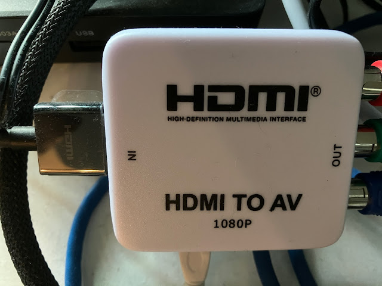
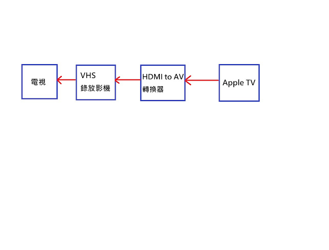
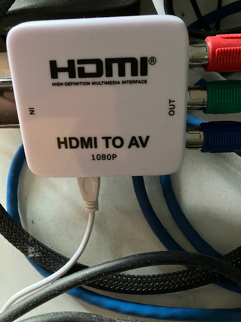
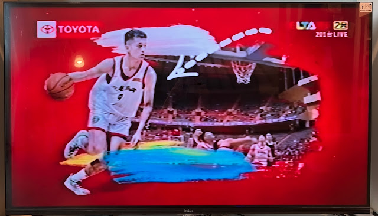
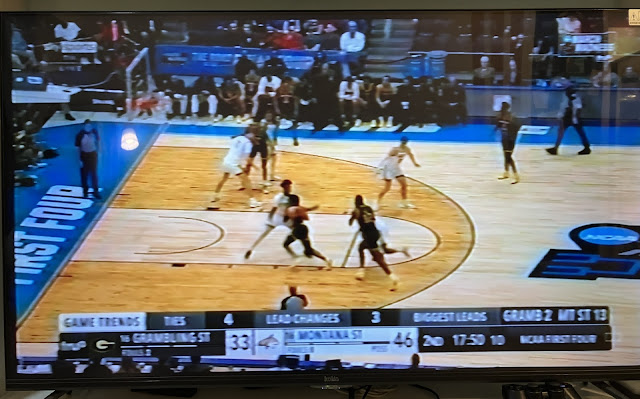

HDMI轉AV-用降維方式錄影電視節目

HDMI轉AV-以前小時候習慣用VHS錄影機錄製節目，這個習慣一直沿用至今日。然而現在的電視或網路節目已經是1080i為主流，會使用720甚至480畫素的節目已經非常罕見，低於1080i基本上已經無法被一般民眾所接受，因此，像錄影機這種無法提供高畫質的影音設備已經成為古董，大多數人都不會去使用。
然而，由於著作權的關係，目前以HDMI傳輸影音的節目都有保護的機制，所以如果你的設備沒有經過HDCP(High-Bandwidth Digital Content Protection；高頻寬數位內容保護)授權，你就沒有辦法正常的收看節目或錄製節目。市面上確實有許多可以錄製HDMI影音的設備，但是這些設備基本上都不提供錄製HDCP節目的功能。當然網路上依舊有許多人提供可以破解的方式，例如加裝HDMI Splitter，就可以解碼HDCP。
不過雖然有前述的方式可以破解，但是由於小弟還是覺得用HDMI設備錄製的方式，實在是不熟悉且過於麻煩，因此就想是否可以以犧牲畫質的方式，來達到可以錄影的目的呢?後來，就發現AMAZON上有賣HDMI轉AV的轉接器，而且還可以用在舊型的電視上觀看FireStick的節目，所以小弟就決定用這樣"降維打擊"，來建構一個可以錄製網路節目的架構。小弟使用的架構如下。

簡單來說，我是使用Apple TV當作訊號來源，Apple TV輸出的訊號傳送至HDMI轉AV的轉接器(把數位信號轉換成類比訊號)，轉接器的類比信號進入VHS錄影機，錄影機的類比信號再進入電視。經過HDMI轉AV的轉接器的訊號轉換後(應該市面上販售的HDMI轉AV的轉接器都可以，我是在高雄的建國路附近買的)，完全擺脫了HDCP的束縛，只是訊號變成類比訊號，畫質也下降成480(DVD畫質)。



雖然畫質不是很理想，但是這樣的方式確實可以有效擺脫HDCP的束縛，小弟就是用這樣的方式錄影NCAA的籃球賽。不過由於現在都是以HDMI為主流，VHS錄影機也不太好找，VHS錄影帶也不多見，如果你家裡正好來有閒置的VHS錄影機，不彷來試試看，回味一下當年的畫質吧!
延伸閱讀:
你用的是「授權」過的HDMI 產品嗎?TVHeadend-用Raspberry Pi搭建無線數位電視Server
另外，美國購物代運可參考:
https://a1253247.blogspot.com/p/hopshopgo-vs-spexeshop.html
對板球有興趣的可參考:
https://a1253247.blogspot.com/2022/05/cricket-line-written-by-admin-24-10.html
對生活飲食有興趣，可參考: